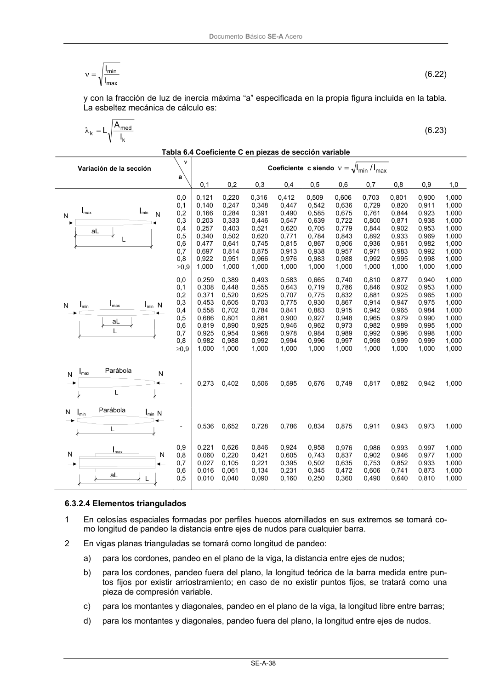

DB-SE-A Acero · edición 2007-10-23 · capa oficial
Documento DB-SE-A-oficial · SHA-256 del PDF 9ed9ea694aabfbda3bfbbef40dfe9223fde05d13c35bc2ba9751e5a96a22a64f
Página física 40 de 168.
Copia fiel del PDF fuente · Fuente oficial
Ficha de la disposición en la fuente oficial
Formato: Texto de la página (Markdown)
Documento Básico SE-A Acero SE-A-38 max min l l = ν (6.22) y con la fracción de luz de inercia máxima “a” especificada en la propia figura incluida en la tabla. La esbeltez mecánica de cálculo es: k med k l A L = λ (6.23) Tabla 6.4 Coeficiente C en piezas de sección variable Coeficiente c siendo max min I/ I = ν Variación de la sección ν a 0,1 0,2 0,3 0,4 0,5 0,6 0,7 0,8 0,9 1,0 0,0 0,1 0,2 0,3 0,4 0,5 0,6 0,7 0,8 ≥0,9 0,121 0,140 0,166 0,203 0,257 0,340 0,477 0,697 0,922 1,000 0,220 0,247 0,284 0,333 0,403 0,502 0,641 0,814 0,951 1,000 0,316 0,348 0,391 0,446 0,521 0,620 0,745 0,875 0,966 1,000 0,412 0,447 0,490 0,547 0,620 0,771 0,815 0,913 0,976 1,000 0,509 0,542 0,585 0,639 0,705 0,784 0,867 0,938 0,983 1,000 0,606 0,636 0,675 0,722 0,779 0,843 0,906 0,957 0,988 1,000 0,703 0,729 0,761 0,800 0,844 0,892 0,936 0,971 0,992 1,000 0,801 0,820 0,844 0,871 0,902 0,933 0,961 0,983 0,995 1,000 0,900 0,911 0,923 0,938 0,953 0,969 0,982 0,992 0,998 1,000 1,000 1,000 1,000 1,000 1,000 1,000 1,000 1,000 1,000 1,000 0,0 0,1 0,2 0,3 0,4 0,5 0,6 0,7 0,8 ≥0,9 0,259 0,308 0,371 0,453 0,558 0,686 0,819 0,925 0,982 1,000 0,389 0,448 0,520 0,605 0,702 0,801 0,890 0,954 0,988 1,000 0,493 0,555 0,625 0,703 0,784 0,861 0,925 0,968 0,992 1,000 0,583 0,643 0,707 0,775 0,841 0,900 0,946 0,978 0,994 1,000 0,665 0,719 0,775 0,930 0,883 0,927 0,962 0,984 0,996 1,000 0,740 0,786 0,832 0,867 0,915 0,948 0,973 0,989 0,997 1,000 0,810 0,846 0,881 0,914 0,942 0,965 0,982 0,992 0,998 1,000 0,877 0,902 0,925 0,947 0,965 0,979 0,989 0,996 0,999 1,000 0,940 0,953 0,965 0,975 0,984 0,990 0,995 0,998 0,999 1,000 1,000 1,000 1,000 1,000 1,000 1,000 1,000 1,000 1,000 1,000 - 0,273 0,402 0,506 0,595 0,676 0,749 0,817 0,882 0,942 1,000 - 0,536 0,652 0,728 0,786 0,834 0,875 0,911 0,943 0,973 1,000 0,9 0,8 0,7 0,6 0,5 0,221 0,060 0,027 0,016 0,010 0,626 0,220 0,105 0,061 0,040 0,846 0,421 0,221 0,134 0,090 0,924 0,605 0,395 0,231 0,160 0,958 0,743 0,502 0,345 0,250 0,976 0,837 0,635 0,472 0,360 0,986 0,902 0,753 0,606 0,490 0,993 0,946 0,852 0,741 0,640 0,997 0,977 0,933 0,873 0,810 1,000 1,000 1,000 1,000 1,000 6.3.2.4 Elementos triangulados 1 En celosías espaciales formadas por perfiles huecos atornillados en sus extremos se tomará co- mo longitud de pandeo la distancia entre ejes de nudos para cualquier barra. 2 En vigas planas trianguladas se tomará como longitud de pandeo: a) para los cordones, pandeo en el plano de la viga, la distancia entre ejes de nudos; b) para los cordones, pandeo fuera del plano, la longitud teórica de la barra medida entre pun- tos fijos por existir arriostramiento; en caso de no existir puntos fijos, se tratará como una pieza de compresión variable. c) para los montantes y diagonales, pandeo en el plano de la viga, la longitud libre entre barras; d) para los montantes y diagonales, pandeo fuera del plano, la longitud entre ejes de nudos. N N L aL Imax Imin Imax Imin Imin N N aL L N N Imax Parábola N N Imin Parábola Imin L Imax aL L N N

Datos candidatos: compruebe celdas y notas en el PDF.